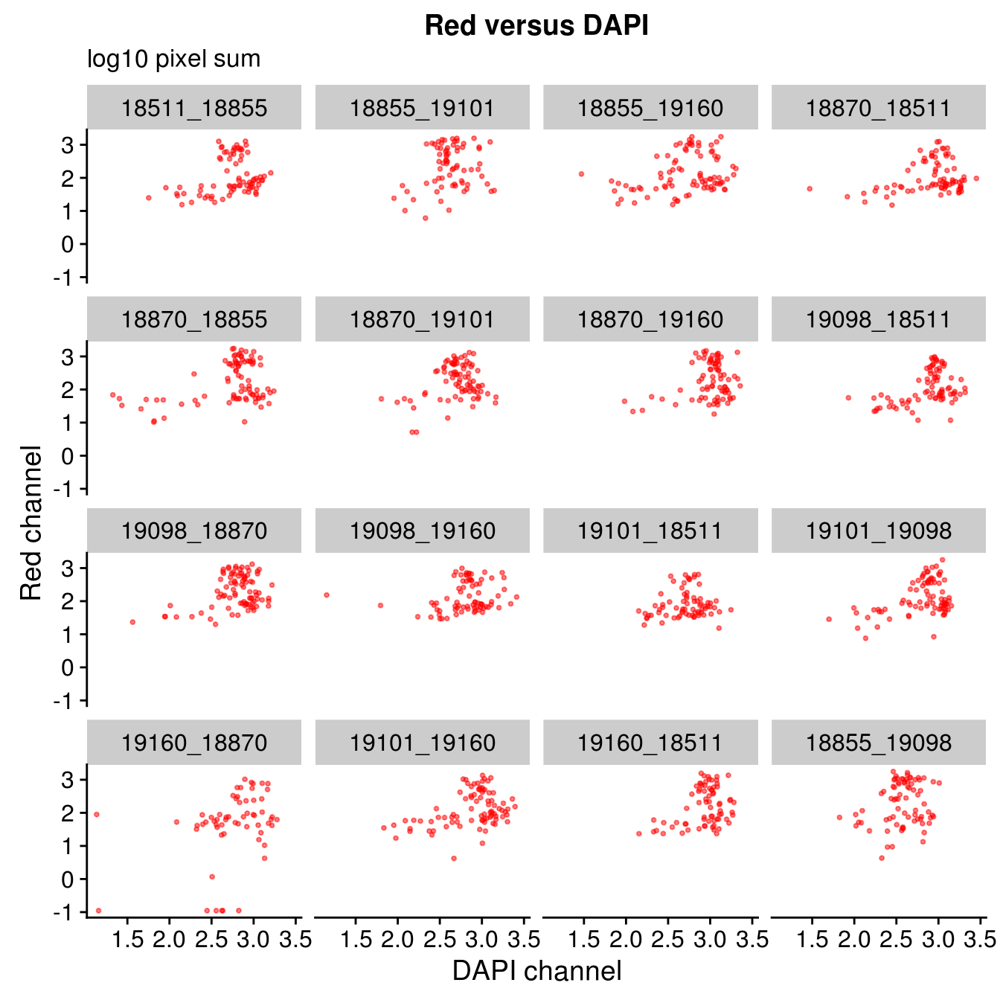
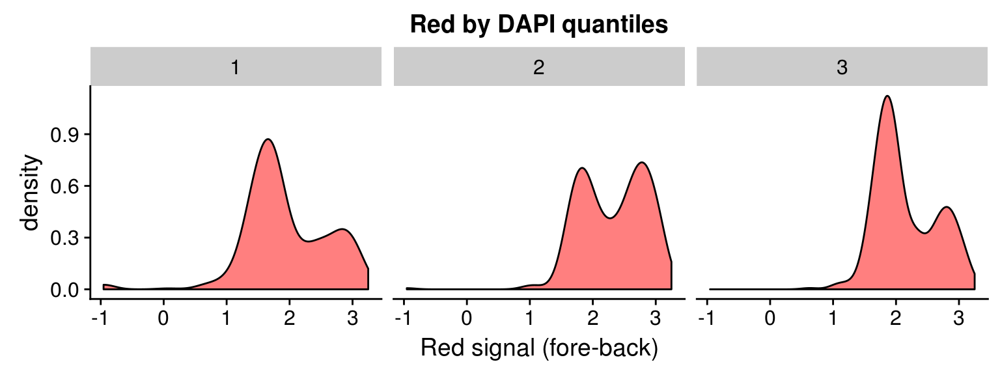
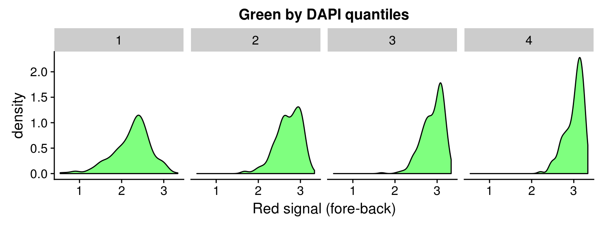

Images quality control follow-up analysis
Joyce Hsiao
Last updated: 2017-11-02
Code version: ceccc00
Background and summary
In the current analysis, we computed corrected signal for each channel as follows:
(foreground mean intensity - background mean intenstiy)*mask sizeThe mask size is defined as: Denote the center of the nucleus as (cx,cy), then the mask area is (max(1,cx-50):min(cx+50,nrow), max(1,cy-50):min(cy+50,ncol)). The maximum mask size is 10,000.
This metric for summarizing pixel intensity factors into the quantity of cell cycle protein, and indirectly, the cell size. While, previously our metric of mean pixel intensity does not account for the quantify of cell cycle protein.
Results:
In about 10 to 15 single cell samples, the background intensity is greater than the foreground intensity by a small amount (~.001) in the Red or the Green channel. we need to check to see if there are signals at all for these samples in any of channles. If there’s any signal, then we’ll set the channel with no signal to the lowest possible intensity value.
On log10 scale of pixel sum intensity, we are able to observe the separation of single cell samples on Red channel and also on Green channel. And, interestly, in figures plotting Red against Green, we observe three clusters roughly correspond to low, medium and high DAPI.
Plate effect: the pattern observed in Red intensities against Green intensities appears to vary by plate, and when we control for plate differencees in DAPI intensities, we see the distribution of DAPI intensities fairly similar across plates!
The metric for intensity in the current analysis effective scales the mean intensity by the channel specific and sample-specific coverage area of fluorescent intensities. This is likely the main contributing factor for the better separtion of single cell samples we observe here.
Next steps:
Batch correction for plate and individual effect.
Classification? How? Should be non-linear…
Loading data and packages
library(dplyr)
library(ggplot2)
library(cowplot)
library(wesanderson)
library(RColorBrewer)Name all plates.
plates <- c("18511_18855","18855_19101","18855_19160","18870_18511",
"18870_18855","18870_19101","18870_19160","19098_18511",
"19098_18870","19098_19160","19101_18511","19101_19098",
"19160_18870","19101_19160","19160_18511", "18855_19098")Combine intensity stats from different plates.
#tmp <- readRDS("/project2/gilad/fucci-seq/intensities_stats/18511_18855.stats.rds")
ints <- do.call(rbind, lapply(1:length(plates), function(index) {
ints <- readRDS(paste0("/project2/gilad/fucci-seq/intensities_stats/",plates[index],".stats.rds"))
data.frame(plate=plates[index], well=ints$wellID,
rfp.sum.zoom=ints$rfp.sum.zoom,
gfp.sum.zoom=ints$gfp.sum.zoom,
dapi.sum.zoom=ints$dapi.sum.zoom)
}) )
ints <- ints %>% mutate(dapi_4quant=ntile(dapi.sum.zoom,4),
dapi_3quant=ntile(dapi.sum.zoom,3))
saveRDS(ints, file = "/project2/gilad/joycehsiao/fucci-seq/output/ints.long.rds")Load the above intensity stats rds.
ints <- readRDS(file = "/project2/gilad/joycehsiao/fucci-seq/output/ints.long.rds")DAPI versus Green/Red
Pixel sum
plot_grid(
ggplot(ints, aes(x=dapi.sum.zoom, y = rfp.sum.zoom)) +
geom_point(col = "red", alpha = .5, cex = .7) +
labs(title = "Red versus DAPI",
subtitle = "pixel sum",
x="DAPI channel", y = "Red channel") ,
ggplot(ints, aes(x=dapi.sum.zoom, y = gfp.sum.zoom)) +
geom_point(col = "green", alpha = .5, cex = .7) +
labs(title = "Green versus DAPI",
subtitle = "pixel sum",
x="DAPI channel", y = "Green channel") )
log 10 pixel sum
plot_grid(
ggplot(ints, aes(x=log10(dapi.sum.zoom), y = log10(rfp.sum.zoom))) +
geom_point(col = "red", alpha = .5, cex = .7) +
labs(title = "Red versus DAPI",
subtitle="log10 pixel sum",
x="DAPI channel", y = "Red channel"),
ggplot(ints, aes(x=log10(dapi.sum.zoom), y = log10(gfp.sum.zoom))) +
geom_point(col = "green", alpha = .5, cex = .7) +
labs(title = "Green versus DAPI",
subtitle = "log10 pixel sum",
x="DAPI channel", y = "Green channel") )Warning in fun(x, ...): NaNs producedWarning in FUN(X[[i]], ...): NaNs producedWarning: Removed 8 rows containing missing values (geom_point).Warning in fun(x, ...): NaNs producedWarning in FUN(X[[i]], ...): NaNs producedWarning: Removed 16 rows containing missing values (geom_point).By plate
ggplot(ints, aes(x=log10(dapi.sum.zoom), y = log10(rfp.sum.zoom))) +
geom_point(col = "red", alpha = .5, cex = .7) +
facet_wrap(~plate, ncol=4) +
labs(title = "Red versus DAPI",
subtitle = "log10 pixel sum",
x="DAPI channel", y = "Red channel") Warning in fun(x, ...): NaNs producedWarning in FUN(X[[i]], ...): NaNs producedWarning: Removed 8 rows containing missing values (geom_point).ggplot(ints, aes(x=log10(dapi.sum.zoom), y = log10(gfp.sum.zoom))) +
geom_point(col = "green", alpha = .5, cex = .7) +
facet_wrap(~plate, ncol=4) +
labs(title = "Green versus DAPI",
subtitle = "log10 pixel sum",
x="DAPI channel", y = "Green channel") Warning in fun(x, ...): NaNs producedWarning in FUN(X[[i]], ...): NaNs producedWarning: Removed 16 rows containing missing values (geom_point).
Red vs Green binned by DAPI quantiles
Across plates
Compute DAPI quantiles across plates.
ggplot(ints, aes(x=log10(gfp.sum.zoom), y = log10(rfp.sum.zoom), col = as.factor(dapi_3quant))) +
geom_point(alpha = .5, cex = .7) +
labs(title = "Samples binned by DAPI 3 quantiles",
x="Green channel log10 pixel sum", y = "Red channel log10 pixel sum") +
scale_color_manual(values=c("blue", "darkorange", "red")) + theme_gray() Warning in fun(x, ...): NaNs produced
Warning in fun(x, ...): NaNs producedWarning in FUN(X[[i]], ...): NaNs produced
Warning in FUN(X[[i]], ...): NaNs producedWarning: Removed 22 rows containing missing values (geom_point).ggplot(ints, aes(x=log10(gfp.sum.zoom), y = log10(rfp.sum.zoom), col = as.factor(dapi_4quant))) +
geom_point(alpha = .5, cex = .7) +
labs(title = "Samples binned by DAPI 4 quantiles",
x="Green channel log10 pixel sum", y = "Red channel log10 pixel sum") +
scale_color_manual(values=c("blue", "forestgreen", "darkorange", "red")) + theme_gray() Warning in fun(x, ...): NaNs producedWarning in fun(x, ...): NaNs producedWarning in FUN(X[[i]], ...): NaNs produced
Warning in FUN(X[[i]], ...): NaNs producedWarning: Removed 22 rows containing missing values (geom_point).By plate, overall DAPI quantiles
Compute DAPI quantiles across plates.
ggplot(ints, aes(x=log10(gfp.sum.zoom), y = log10(rfp.sum.zoom), col = as.factor(dapi_3quant))) +
geom_point(alpha = .5, cex = .7) +
facet_wrap(~plate, ncol=4) +
labs(title = "Samples binned by DAPI 4 quantiles",
x="Green channel log10 pixel sum", y = "Red channel log10 pixel sum") +
scale_color_manual(values=c("blue", "darkorange", "red")) + theme_gray() Warning in fun(x, ...): NaNs produced
Warning in fun(x, ...): NaNs producedWarning in FUN(X[[i]], ...): NaNs produced
Warning in FUN(X[[i]], ...): NaNs producedWarning: Removed 22 rows containing missing values (geom_point).ggplot(ints, aes(x=log10(gfp.sum.zoom), y = log10(rfp.sum.zoom), col = as.factor(dapi_4quant))) +
geom_point(alpha = .5, cex = .7) +
facet_wrap(~plate, ncol=4) +
labs(title = "Samples binned by DAPI 4 quantiles",
x="Green channel log10 pixel sum", y = "Red channel log10 pixel sum") +
scale_color_manual(values=c("blue", "forestgreen", "darkorange", "red")) + theme_gray() Warning in fun(x, ...): NaNs producedWarning in fun(x, ...): NaNs producedWarning in FUN(X[[i]], ...): NaNs produced
Warning in FUN(X[[i]], ...): NaNs producedWarning: Removed 22 rows containing missing values (geom_point).By plate, plate-specific DAPI quantiles
Compute DAPI quantiles in each plate.
ints_tmp <- ints %>% group_by(plate) %>% mutate(dapi_4quant=ntile(dapi.sum.zoom,4),
dapi_3quant=ntile(dapi.sum.zoom,3))ggplot(ints_tmp, aes(x=log10(gfp.sum.zoom), y = log10(rfp.sum.zoom), col = as.factor(dapi_3quant))) +
geom_point(alpha = .5, cex = .7) +
facet_wrap(~plate, ncol=4) +
labs(title = "Samples binned by DAPI 3 quantiles",
x="Green channel log10 pixel sum", y = "Red channel log10 pixel sum") +
scale_color_manual(values=c("blue", "darkorange", "red")) + theme_gray() Warning in fun(x, ...): NaNs produced
Warning in fun(x, ...): NaNs producedWarning in FUN(X[[i]], ...): NaNs produced
Warning in FUN(X[[i]], ...): NaNs producedWarning: Removed 22 rows containing missing values (geom_point).
ggplot(ints_tmp, aes(x=log10(gfp.sum.zoom), y = log10(rfp.sum.zoom), col = as.factor(dapi_4quant))) +
geom_point(alpha = .5, cex = .7) +
facet_wrap(~plate, ncol=4) +
labs(title = "Samples binned by DAPI 4 quantiles",
x="Green channel log10 pixel sum", y = "Red channel log10 pixel sum") +
scale_color_manual(values=c("blue", "forestgreen", "darkorange", "red")) + theme_gray() Warning in fun(x, ...): NaNs producedWarning in fun(x, ...): NaNs producedWarning in FUN(X[[i]], ...): NaNs produced
Warning in FUN(X[[i]], ...): NaNs producedWarning: Removed 22 rows containing missing values (geom_point).Density distribution
DAPI 3 quantiles
ggplot(data=ints, aes(x=log10(rfp.sum.zoom))) + geom_density(fill = "red", alpha=.5) +
facet_wrap(~as.factor(dapi_3quant), nrow=1) +
labs(title = "Red by DAPI quantiles", x = "Red signal (fore-back)")Warning in fun(x, ...): NaNs producedWarning in FUN(X[[i]], ...): NaNs producedWarning: Removed 8 rows containing non-finite values (stat_density).ggplot(data=ints, aes(x=log10(gfp.sum.zoom))) + geom_density(fill = "green", alpha=.5) +
facet_wrap(~as.factor(dapi_3quant), nrow=1) +
labs(title = "Green by DAPI quantiles", x = "Red signal (fore-back)")Warning in fun(x, ...): NaNs producedWarning in FUN(X[[i]], ...): NaNs producedWarning: Removed 16 rows containing non-finite values (stat_density).
DAPI 4 quantiles
ggplot(data=ints, aes(x=log10(rfp.sum.zoom))) + geom_density(fill = "red", alpha=.5) +
facet_wrap(~as.factor(dapi_4quant), nrow=1) +
labs(title = "Red by DAPI quantiles", x = "Red signal (fore-back)")Warning in fun(x, ...): NaNs producedWarning in FUN(X[[i]], ...): NaNs producedWarning: Removed 8 rows containing non-finite values (stat_density).ggplot(data=ints, aes(x=log10(gfp.sum.zoom))) + geom_density(fill = "green", alpha=.5) +
facet_wrap(~as.factor(dapi_4quant), nrow=1) +
labs(title = "Green by DAPI quantiles", x = "Red signal (fore-back)")Warning in fun(x, ...): NaNs producedWarning in FUN(X[[i]], ...): NaNs producedWarning: Removed 16 rows containing non-finite values (stat_density).
Session information
sessionInfo()R version 3.4.1 (2017-06-30)
Platform: x86_64-redhat-linux-gnu (64-bit)
Running under: Scientific Linux 7.2 (Nitrogen)
Matrix products: default
BLAS/LAPACK: /usr/lib64/R/lib/libRblas.so
locale:
[1] LC_CTYPE=en_US.UTF-8 LC_NUMERIC=C
[3] LC_TIME=en_US.UTF-8 LC_COLLATE=en_US.UTF-8
[5] LC_MONETARY=en_US.UTF-8 LC_MESSAGES=en_US.UTF-8
[7] LC_PAPER=en_US.UTF-8 LC_NAME=C
[9] LC_ADDRESS=C LC_TELEPHONE=C
[11] LC_MEASUREMENT=en_US.UTF-8 LC_IDENTIFICATION=C
attached base packages:
[1] stats graphics grDevices utils datasets methods base
other attached packages:
[1] RColorBrewer_1.1-2 wesanderson_0.3.4 cowplot_0.8.0
[4] ggplot2_2.2.1 dplyr_0.7.4
loaded via a namespace (and not attached):
[1] Rcpp_0.12.13 knitr_1.17 bindr_0.1 magrittr_1.5
[5] munsell_0.4.3 colorspace_1.3-2 R6_2.2.2 rlang_0.1.2
[9] plyr_1.8.4 stringr_1.2.0 tools_3.4.1 grid_3.4.1
[13] gtable_0.2.0 git2r_0.19.0 htmltools_0.3.6 lazyeval_0.2.0
[17] yaml_2.1.14 rprojroot_1.2 digest_0.6.12 assertthat_0.2.0
[21] tibble_1.3.4 bindrcpp_0.2 glue_1.1.1 evaluate_0.10.1
[25] rmarkdown_1.6 labeling_0.3 stringi_1.1.5 compiler_3.4.1
[29] scales_0.5.0 backports_1.1.1 pkgconfig_2.0.1 This R Markdown site was created with workflowr